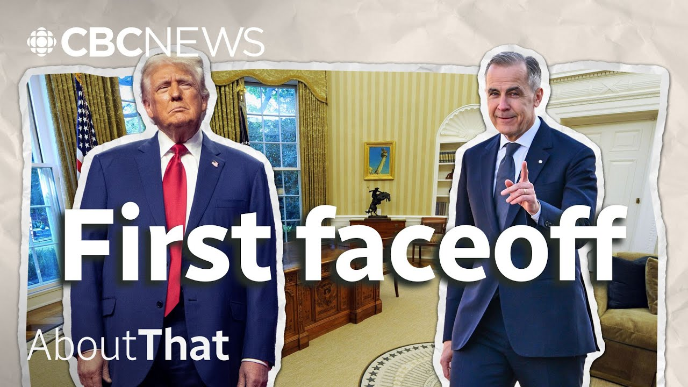

来B站一起耍【Global每日英语简报】
【卡尼能否避免加拿大与美国在特朗普任内爆发贸易战？ | 深度解析】
Summary: The transcript discusses the tense and potentially volatile meeting between Canadian Prime Minister Mark Carney and U.S. President Donald Trump, focusing on trade tensions and broader economic and security issues. Carney, who has previously criticized Trump, now faces the challenge of negotiating with him amid a barrage of U.S. tariffs on Canadian goods, including steel, aluminum, cars, and critical minerals, which Canada has retaliated against with its own tariffs. Trump’s claims of a $200 billion trade deficit with Canada are disputed, as the actual figure is much lower, and his justifications for tariffs often lack evidence or are tied to unrelated issues like national security or fentanyl trafficking, despite Canada contributing minimally to the U.S. fentanyl crisis. The meeting’s success hinges on establishing common ground and avoiding personal clashes, as Trump values personal chemistry. The outcome will shape the future of U.S.-Canada relations, including the renegotiation of the USMCA trade deal in 2026. Carney’s ability to steer the conversation toward trade and away from inflammatory topics like annexation will be critical to preventing a full-blown trade war.
摘要： 这段文字记录了加拿大总理马克·卡尼与美国总统唐纳德·特朗普之间紧张且可能充满变数的会晤，重点讨论了贸易摩擦及更广泛的经济与安全议题。曾多次公开批评特朗普的卡尼，如今面临在美方对加拿大钢铁、铝材、汽车和关键矿物等商品加征关税的背景下与其谈判的挑战——加拿大已采取对等报复性关税措施。特朗普声称美加存在2000亿美元贸易逆差，但实际数字远低于此，其加征关税的理由往往缺乏依据，甚至牵强附会地将国家安全或芬太尼走私等无关议题作为借口（尽管加拿大对美国的芬太尼危机影响微乎其微）。鉴于特朗普重视个人互动默契，此次会晤成败关键在于能否建立共识并避免私人冲突。会谈结果将深刻影响美加关系未来走向，包括2026年《美墨加协定》的重新谈判。卡尼能否将对话焦点控制在贸易领域，避开"吞并"等煽动性话题，将成为避免全面贸易战的关键。

⏱️ Estimated Reading Time: 16 min
Mark Carney is right now the prime minister of Canada in large part because of his take on Trump that he is the enemy.
马克·卡尼之所以能成为加拿大总理，很大程度上是因为他将特朗普视为敌人。
We are over the shock of the American betrayal.
我们已经从美国的背叛中缓过神来。
Trump is trying to break us so that America can own us.
特朗普试图击垮我们，好让美国掌控我们。
Our old relationship based on steadily increasing integration is over.
我们过去基于逐步深化一体化的关系已经结束了。
But here's the awkward part.
但尴尬的部分来了。
It was the one that hated Trump.
正是那个讨厌特朗普的人。
I think the least of that one.
我觉得那是最不重要的。
That same Mark Carney will now confront the man he has been vilifying.
如今，正是这位马克·卡尼要去面对他长期抨击的对象。
Today we mentioned Mark Carney leaves for Washington, that meeting tomorrow in the White House.
今天我们提到马克·卡尼启程前往华盛顿，明天将在白宫会面。
But this is politics where a man can walk right into the Oval Office having told millions of his supporters of American betrayal.
但这就是政治——一个人可以一边向数百万支持者控诉美国的背叛，一边径直走进椭圆形办公室。
He can look that other man who refuses to stop threatening Canada with annexation dead in the eye.
他可以直视那个不断以吞并威胁加拿大的男人。
And it all might go very very smoothly or it might not.
这一切可能非常顺利，也可能完全相反。
We don't know.
我们无从知晓。
We are very intentionally recording this before the meeting takes place because while the meeting is expected to be substantive like you know this isn't just some 20-minute handshake photo op.
我们特意在会面前录制本期内容，因为尽管这会面预计将涉及实质内容（而非20分钟的握手拍照作秀）。
Both sides are bringing teams of people to talk for the cameras there will still be posturing and window dressing and maybe even theatrics layered on top.
双方都会带团队来面对镜头，仍会有姿态性的表演、粉饰甚至层层叠加的戏剧性场面。
Do not expect white smoke uh out of that meeting.
别指望这次会面能冒出"白烟"（达成协议）。
I'm not sure what he wants to see me about, but I guess he wants to make a deal.
我不确定他为何要见我，但估计是想达成交易。
So, our goal is to detach from that and instead to give you a broad sense of what the two sides actually have to discuss.
因此我们的目标是跳脱表象，带你们了解双方真正需要讨论的内容。
Awkwardness aside, our focus will be on both immediate trade pressures and the broader future economic and security relationship between our two sovereign nations.
抛开尴尬不谈，焦点将集中在紧迫的贸易压力与两国未来更广泛的经济安全关系上。
Trade pressures is a very understated way of referring to an absolutely dizzying array of tariffs Trump has by executive order imposed on Canadian goods entering the country.
所谓"贸易压力"，实则是特朗普通过行政令对加拿大输美商品征收的令人眼花缭乱的关税：
25% on Canadian steel and aluminum, 25% on Canadian cars, 25% on anything in fact not covered by the existing free trade deal, plus 10% on critical minerals, energy and potash.
加拿大钢铁铝材25%、汽车25%、现有自贸协定未覆盖商品25%，关键矿物能源钾肥再加10%。
Then you have Canada retaliating with tariffs on $30 billion worth of American goods, plus another set of tariffs on another $30 billion worth of goods, which includes US steel and aluminum, and then countervailing tariffs on certain American cars.
加拿大则对300亿美国商品加征报复性关税，再对另300亿（含美钢铝）加税，并对特定美产汽车征收反补贴税。
And these don't include all the times tariffs were threatened but then paused.
这还不包括那些威胁征收又暂缓的关税。
Today, we're moving forward with a 25% surcharge on electricity exports.
今天我们对电力出口加征25%附加费。
The US Customs Agency now says parts covered by North American free trade rules will be exempted.
美国海关称北美自贸规则覆盖的零部件将获豁免。
But here's where things get tricky.
但棘手之处在于：
If you're thinking about how precarious talks will be because Trump's position is built on a claim he has never backed up.
谈判之所以脆弱，因特朗普的立场基于毫无根据的说法。
We're spending hundreds of billions a year to take care of Canada.
我们每年花数千亿供养加拿大。
We we lose in trade deficits.
我们在贸易逆差中亏损。
Why are we supporting a country 200 billion plus a year?
为何要每年补贴2000多亿？
Nobody knows where that number comes from because it doesn't match any number anyone has on record.
无人知晓这数字来源——它与任何记录都不符。
The actual US trade deficit with Canada, nowhere near the 200 billion figure cited so often by Trump.
美加实际贸易逆差远非特朗普常说的2000亿。
It was just over $63 billion US last year.
去年仅630多亿美元。
Now, it's widely believed Trump's $200 billion figure is more notional than anything else.
普遍认为特朗普的2000亿更多是概念性数字——
An informal accounting of the many ways the US supports Canada militarily and in matters of defense, for example.
比如对美国军事防卫支持的非正式估算。
So, okay, add it to the pile of numbers Donald Trump has ever offered without any evidentiary backing.
好吧，这不过是特朗普众多无证据数字的又一例。
Since I came in, gasoline is down, groceries are down, egg prices are down, uh many things are down, just about everything.
自我上任，汽油、杂货、鸡蛋等几乎所有东西都在降价。
Eggs are down 87%.
鸡蛋降了87%。
Cambodia, oh look at Cambodia, 97%.
柬埔寨？看看柬埔寨，97%！
We're subsidizing Canada to the tune of over a hundred billion a year and $200 billion a year going up to 400%.
我们每年补贴加拿大超千亿，2000亿年增幅达400%。
But if you're Mark Carney and you're trying to settle what is essentially a giant math problem, except the numbers themselves are at best hazy and at worst arbitrary.
但作为马克·卡尼，要解决这个本质是数学难题的问题时，数字本身却至多模糊、至武断。
That's not an easy conversation to have.
这场对话注定艰难。
I think the expectations for this meeting need to be frankly kind of low because we're not even talking about the same things.
坦白说需降低预期——双方甚至不在同一频道。
So figuring out what the box that we're going to be talking within is, I think that's job number one.
因此首要任务是界定讨论框架。
And there's an even bigger picture here.
还有更宏观层面：
For a long time now, experts have wondered whether this trade war is a war with its own set of purposes.
专家长期质疑这场贸易战是否另有目的——
To raise money to stoke domestic manufacturing to put allies on notice or is it creating leverage for a larger negotiation down the road?
筹款刺激国内制造业？警示盟友？还是为后续更大谈判积攒筹码？
The trade deal that is up for review is the US, Canada, Mexico agreement, the USMCA.
待审议的是美加墨协定（USMCA）。
If we look at trade between the three countries in the USMCA, uh we trade over a trillion dollars and in fact uh in the United States about 40 states trade more with Canada than with any other economy in the world.
USMCA三国贸易额超万亿，美国约40个州与加拿大贸易量超过其他任何经济体。
Right?
对吧？
So this is such an important uh trade economy uh trade agreement for um the the United States as well.
因此这对美国也是极其重要的贸易协定。
Trump's first administration negotiated the free trade deal Canadians know as CUSMA and that Americans know as the USMCA.
特朗普首任政府谈判的自贸协定，加方称CUSMA，美方称USMCA。
But Trump believes Canada has not lived up to its terms and by law, there has to be a new deal renegotiated in 2026.
但特朗普认为加拿大未履约，且依法需在2026年重新谈判。
So between now and then, plenty of time for things to become far more complicated.
在此期间，事态可能更加复杂。
The reason we know the subject of this White House meeting cannot possibly be strictly limited to trade is because Trump believes many issues are interconnected.
我们确信白宫会晤不限于贸易，因特朗普认为许多问题相互关联——
Even issues that have no apparent connection at all.
甚至毫无明显联系的问题。
Much has been said over the last three months about Mexico and Canada, but we have very large deficits with both of them.
过去三月对墨加谈论甚多，但我们与两者都有巨额逆差。
But even more importantly, they've allowed fentanyl to come into our country at levels never seen before.
更重要的是，他们放任芬太尼以空前规模流入我国。
We learned three important things from the opening days of Trump's presidency when he threatened tariffs on Canadian goods, angry about Canadian fentanyl apparently flooding in.
从特朗普执政初期威胁对加征关税（愤怒于芬太尼泛滥）我们学到三点：
One, that Trump is capable of justifying tariffs even with reasons that have nothing to do with trade.
Two, that these provided reasons don't even need to be all that grounded.
Because regarding fentanyl, what Trump has repeatedly ignored is the fact that last year, US agents only seized about 50 lb of fentanyl at its northern border with Canada.
因就芬太尼而言，特朗普始终忽视：去年美加北部边境仅查获50磅
Compare that to the more than 20,000 pounds, almost 10,000 kilos of.
对比美墨南部边境查获超2万磅（近万公斤）
Fentanyl seized at the southern border with Mexico.
（芬太尼查获量）
Canada is responsible for less than 1% of the illegal fentanyl that is going into the United States.
加拿大仅占美国非法芬太尼来源的不到1%
And even reducing the amount of Canadian fentanyl caught crossing into the US border to less than half a pound for all of March this year across the entire border, part of a $1.3 billion effort to address Trump's demand, even that could not move Trump off his position.
即便加拿大耗资13亿将三月全境查获量降至半磅以下，仍未能改变特朗普立场
That entire swaths of Canada's economy needed to be tariffed.
（他仍认为）需对加拿大整个经济领域加税
The fentanyl tariffs were not merited to begin with, but are even less merited given all the steps that the government of Canada has taken and the progress that's been made.
芬太尼关税本就不合理，加方采取诸多措施后更站不住脚
But here's the third thing we learned from that whole episode: that so much of what Trump demands of foreign countries he justifies as a national security issue or even a national emergency.
It was true of fentanyl.
芬太尼如此
It was true for steel and aluminum.
钢铝如此
It was true of cars.
汽车如此
It's even true for his latest tariffs against foreign films.
最新对外国电影的100%关税亦然
A 100% tariff on any and all movies coming into our country that are produced in foreign lands.
（对全部外国产电影征收）
The justification, an unsubstantiated claim that there is a concerted effort to destroy Hollywood and that this constitutes, you guessed it, a national security threat.
理由是无证据的"摧毁好莱坞阴谋论"——你猜对了——构成国家安全威胁
The main reason he's calling these out as security issues is by doing so, it gives him the power to control the tariffs that he's using to try to fight this trade war.
其将问题安全化的核心目的，是通过此举获得关税控制权来打贸易战
President Trump doesn't want to go through the traditional processes.
特朗普不愿走传统流程
He doesn't want to follow basic norms.
不愿遵循基本规范
He doesn't want to go through Congress, which actually has the authority to regulate trade with foreign countries.
不愿通过本有权管理外贸的国会
And so what we're seeing is a very ad hoc approach.
因此我们看到极其随意的做法
So Mark Carney may walk into this meeting with Donald Trump expecting to stay focused on two big issues.
马克·卡尼可能预期聚焦两大议题
Our focus will be on both immediate trade pressures and the broader future economic and security relationship between our two sovereign nations.
（即）紧迫贸易压力与两国未来经济安全关系
But these two issues cover everything: all that we've mentioned plus everything we haven't.
但这两点涵盖所有——提及与未提及的
Canada's military defense spending certainly and how this country has consistently failed to meet its 2% NATO target, but also the Americans increasingly choked supply of critical raw materials, the rare earths that make electric engines run and jets fly, and Canada's got them.
加国防开支（长期未达北约2%标准）、美方关键原材料（如电动车和飞机所需的稀土）供应紧缩——而加拿大拥有这些
What about water and Canada are locked right now in a water sharing dispute involving the sprawling Columbia River, one of the largest watersheds on the entire continent.
还有水争端——当前正就北美最大流域之一的哥伦比亚河水资源分配僵持
And then consider things from Mark Carney's point of view as it relates to Canadian security.
再从卡尼的加拿大安全视角考量
Do you plan to talk to him about making Canada?
"会讨论让加拿大成为第51州吗？"
He wants to come and see me.
"他想来见我"
He's going to come this week or next week.
"本周或下周就来"
So, will you talk to him about making Canada a 51st state annex in Canada?
"所以会讨论吞并加拿大吗？"
I'll always talk about that.
"我永远会谈这个"
You know why?
"知道为什么吗？"
We subsidize Canada to the tune of $200 billion a year.
"我们每年补贴加拿大2000亿"
If he can push back on the notion of the 51st state without letting the conversation get too bogged down in it and buy it and revert it back to the issues of trade that are the reasons he's here to talk about, then I think that's going to come out as a win for Carney.
若卡尼能反驳第51州论调而不陷入纠缠，将话题拉回贸易，就是他的胜利
If he gets bogged down in fighting with him about whether it's an insult or why it's an insult and why it matters to Canadians, then that's how you can see those meetings turn into a sort of shouting match, and he doesn't want that.
若陷入"这是否侮辱加国民众"的争辩，会议就会沦为争吵——这非他所愿
It's going to be extremely risky for the prime minister in this encounter.
这场会面对总理极度危险
Extremely risky.
极度危险
If it goes off the rails, it could be very, very bad.
若失控将极其糟糕
I've heard experts refer to step one of any relationship between Carney and Trump as a level setting, establishing a baseline.
专家称卡尼与特朗普交往的第一步是"基准校准"
Are we working from the same set of facts?
"我们的事实依据是否一致？"
What do you even want?
"你到底想要什么？"
Figuring out what we're talking about, simple as that may sound, is the most important thing that can be done in this meeting.
搞清讨论内容（看似简单）是会面最重要的事
And that can be accomplished coming out of it.
能做到这点就是成果
If Mark Carney can walk out of the White House saying we have agreed on the parameters of this conversation, that it's about a trade deficit and these are the numbers we're all going to use going forward, that's a net win right there.
若卡尼走出白宫时说"我们界定了对话框架，将用统一数据讨论逆差"，就是净胜利
But what happens over the course of this week will set the tone of a relationship that could last years.
本周进展将定调未来数年的关系
And it's worth noting for everything we could say about potential policy areas of conflict and cooperation, this is also a president who values personal chemistry more than most others.
需注意：除政策冲突与合作外，这位总统比多数人更看重私人化学反应
If Carney is going to avoid a trade war, that's the starting point from which all other things will flow.
若卡尼想避免贸易战，这就是一切的原点